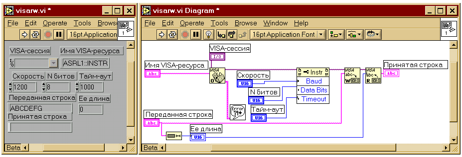

|
Климентьев К.Е.
Использование RS-232 для передачи данных
|
1. Общая характеристика
Международный стандарт RS-232 определяет правила последовательной передачи цифровых данных между двумя устройствами со скоростями от 110 бит/c до 115 Кбит/c (см. табл. 1) на расстояния до 15 м.
Примечание. Применяется большое количество названий для устройств, поддерживающих в той или иной степени стандарт RS-232: асинхронный адаптер (AUX), COM-порт ПЭВМ, устройство “СТЫК-2”, интерфейс “С-2” и пр.
Примечание. Микросхемы интерфейса RS-232 также поддерживают скорости передачи, отличные от стандартных. Например, задав коэффициент деления (код скорости) 10h=16, можно получить скорость V=115200/16=7200 бит/c.
Примечание. При скоростях, отличных от максимальной, возможна надежная передача данных на несколько сотен метров.
Таблица 1
Кодирование скорости передачи данных
|
Код скорости |
Скорость, бит/c |
Код скорости |
Скорость, бит/c |
|
600 |
110 |
18 |
4800 |
|
300 |
150 |
С |
9600 |
|
180 |
300 |
6 |
19200 |
|
С0 |
600 |
3 |
38400 |
|
60 |
1200 |
2 |
57600 |
|
30 |
2400 |
1 |
115200 |
В настоящее время RS-232 широко применяется для организации сети между двумя ПЭВМ (в терминах MS Windows это называется “режим прямого кабельного соединения”), для подключения к ПЭВМ устройств типа “мышь”, модемов и т.п., для управления комплексами медицинского и контрольно-кассового оборудования, и пр. Хотя официальный стандарт предусматривает связь двух устройств через RS-232 по 25 линиям (разъем DB25), но в реальных устройствах обычно реализуются “усеченные” варианты интерфейсных устройств, использующие только 9 линий (разъем DB9). Более того, на практике для обмена чаще всего из этих 9 линий используются только 3: TxD (передача данных), RxD (прием данных), SG (сигнальная земля).
Рис. 1. Нумерация контактов на разъемах различных типов
Различают два класса устройств, обменивающихся данными через RS-232, – источники/передатчики данных (DCE) и приемники данных (DTE). Например, модемы являются устройствами типа DCE, компьютеры – DTE, а связь между ними производится по кабелю, который связывает одноименные контакты разъемов между собой (см. рис. 2). Режим связи между двумя устройствами DTE (например, двух компьютеров) называется “режимом нуль - модема” и требует кабелей с перекрестным соединением линий передачи данных (см. рис. 2). Для отладки программ, работающих с RS-232, часто применяют “заглушки” (loopback).
Рис. 2. Варианты кабелей и заглушек
Информационные биты передаются последовательно в соответствии с форматом, изображенным на рисунке 3. Нулевым битам соответствует напряжение в интервале (+3)ё (+12) В, единичным – напряжение в интервале (–12)ё (-3)В.
Примечание. Существует технология под названием “токовая петля”, позволяющая передавать данные на большие расстояния в виде токовых сигналов. Для преобразования токовых сигналов в сигналы напряжения диапазона ± 12В и обратно используются специальные согласующие адаптеры.
Рис. 3. Формат кадра передачи данных
На этом рисунке START - бит, отмечающий начало “кадра”; DATA - от 5 до 8 информационных битов; PARITY - “бит четности”, служит для проверки целостности передаваемой информации (может отсутствовать); STOP - 1 или 2 бита, отмечающих конец “кадра”. Устройства, связанные по RS-232, должны быть согласованы по скорости передачи и формату кадра.
В ПЭВМ обычно присутствуют два устройства, поддерживающие “усеченный” (9 линий) вариант интерфейса RS-232, и носящие название COM-портов: COM1 (или AUX) и COM2.
Примечание. По умолчанию ROM BIOS поддерживает также подключение дополнительных портов COM3 и COM4.
2. Программирование COM-портов
Краткие описания регистров, через которые осуществляется взаимодействие ПЭВМ с контроллером COM-портов, приведены в таблице 2.
Таблица 2.
Некоторые регистры COM-портов
|
COM1 |
COM2 |
Назначение |
|
3F8h |
2F8h |
Если бит 7 в 3FBh/2FBh равен 1,
То это – младший байт кода скорости;
Иначе это – регистр данных. |
|
3F9h |
2F9h |
Если бит 7 в 3FBh/2FBh равен 1,
То это – младший байт кода скорости;
Иначе – регистр управления:
- бит 0 – разрешение прерывания (0Сh для COM1 или 0Bh для COM2) по приходу данных;
- бит 1 – разрешение прерывания по передаче данных.
|
|
3Fah |
2Fah |
Регистр причины прерывания:
- бит 0: 1 – отсутствие прерываний;
- биты 1-2: 00 – прерывание по ошибке; 01 – прерывание по появлению новых данных; 10 – прерывание при посылке данных.
|
|
3FBh |
2FBh |
Управляющий регистр формата “кадра”:
- биты 0-1 – количество информационных битов в кадре: 00-5; 01-6; 10-7; 11-8.
- бит 2 – количество стоповых битов: 0-1; 1-2.
- Биты 3-4 – способ проверки целостности данных: 00 – не используется; 01 – проверка нечетности; 11 – проверка четности;
- бит 7 – режим работы регистров 3F8h/3F9h (или 2F8h/2F9h): 1 – содержат код скорости; 0 – иначе.
|
|
3FDh |
2FDh |
Управляющий регистр состояния:
- бит 0 – готовность данных для чтения;
- бит 1 – ошибка переполнения;
- бит 2 – ошибка четности;
- бит 3 – ошибка синхронизации;
- бит 4 – запрос на обрыв передачи (последовательность нулей);
- бит 5 – готовность передатчика для записи;
- бит 6 – регистр сдвига пуст;
- бит 7 - устройство отключено.
|
Для управления потоками данных могут использоваться различные варианты протоколов обмена. Аппаратные протоколы требуют использования специальных линий синхронизации и, соответственно, “полных” вариантов соединительных кабелей. Среди программных протоколов самым простым является “XON/XOFF”: если приемник не готов к приему, то он посылает по своей линии TxD код XOFF=13h, а передатчик, приняв этот код, должен приостановить передачу до тех пор, пока не получит код XON=11h.
2.1. Непосредственная инициализация COM-порта
После включения ПЭВМ COM1 по умолчанию инициализируется в следующее состояние: прерывания отключены, буферизация не используется, 8 бит данных, бит четности не используется, скорость передачи 2400 бит/c. Изменить эти установки можно следующим образом.
Шаг 1 – сброс COM-порта в исходное состояние. Это действие не является обязательным и рекомендуется только в тех случаях, если COM-порт ранее был уже проинициализирован какой-нибудь другой программой (например, драйвером мыши). Необходимо записать 0 в регистры с адресами 2F9h/3F9h и 2FAh/3FAh (запретив тем самым прерывания и буферизацию). Затем следует однократно прочитать регистры с адресами 2FAh/3FAh, 2FBh/3FBh и 2FCh/3FCh (эта операция сбросит возможно оставшиеся от предыдущей работы с устройством битовые признаки).
Шаг 2 – установка скорости передачи данных. Скорость передачи данных кодируется в соответствии с таблицей 1. Младший байт этого значения помещается по адресу 2F8h/3F8h, старший – по адресу 2F9h/3F9h, причем предварительно необходимо установить особый режим доступа к этим регистрам, записав в порт 2FBh/3FBh значение с единицей в старшем бите (например, 80h).
Шаг 3 - установка формата блока данных. Формат блока данных кодируется отдельными битами и группами битов регистра с адресом 2F9h/3F9h (см. табл. 2).
Рис 4. ВП инициализации COM-портов
2.2. Обмен данными при помощи опроса битов готовности
Передача данных. Перед записью символа в регистр данных COM-порта, расположенный по адресу 2F8h/3F8h, необходимо убедиться, что он готов для передачи. Признаком готовности является установленный в 1 бит 5 регистра состояния линии с адресом 2FDh/3FDh.
Рис. 5. ВП передачи данных
Прием данных. Перед чтением символа из регистра данных COM-порта, расположенного по адресу 2F8h/3F8h, необходимо убедиться, что этот символ получен и готов для считывания. Признаком готовности является установленный в 1 бит 0 регистра состояния линии с адресом 2FDh/3FDh.
Рис. 6. ВП приема данных
Пример совместного применения этих ВП приведен на рис. 7.
Рис 7. Демонстрация совместной работы ВП COMINIT и COMREAD
2.3. Обмен данными с использованием прерываний
Для установки режима работы COM-порта с использованием прерываний необходимо в процессе инициализации записать бит разрешения прерываний в регистр 2F8h/3F8h. Кроме того, необходимо размаскировать требуемые прерывания в регистре маски системного контроллера прерываний с адресом 21h (бит 3 отвечает за IRQ3, а бит 4 – за IRQ4; нулевое значение бита означает разрешение соответствующего прерывания). Также необходимо предусмотреть наличие специальной процедуры обработки возникающих прерываний. Эта процедура должна завершаться посылкой значения 20h в управляющий регистр системного контроллера прерываний с адресом 20h.
Прототип DOS-программы ввода данных из COM2 по прерыванию.
|
(* Здесь описываются переменные *)
Var . . .
(* Обработчик прерывания *)
procedure New0B; interrupt;
begin
(* Прием байта *)
c[i] := port[$2F8];
inc(i);
(* Выход из прерывания *)
port[$20]:=$20;
end;
begin
(* Инициализация обработчика прерываний *)
GetIntVec($0B, Old0B);
SetIntVec($0B, @New0B);
(* Инициализация устройства *)
port[$2FB] := 3; (* 00000011 – формат “кадра” *)
port[$2FB] := $80; (* Переключение режима *)
port[$2F8] := $80; (* Младший байт кода скорости 300 *)
port[$2F9] := 1; (* Старший байт кода скорости 300 *)
port[$2F9] := 1; (* Разрешение прерываний *)
i:=0;
while not keypressed do begin
...
(* В этом цикле можно выполнять “полезную” работу *)
...
end;
(* Восстановление старого обработчика прерываний *)
SetIntVec($0B, OldOb);
end.
|
2.4. Обмен данными обращением к драйверу COM-портов
В соответствии с современными представлениями непосредственное взаимодействие прикладной программы с контроллером внешнего устройства должно быть ограничено. Посредником между ними должен служить специальный компонент операционной системы – драйвер устройства. В стандартных библиотеках LabVIEW присутствует набор виртуальных приборов, предназначенных для работы с коммуникационными портами (см. рис. 8):
- Serial Port Init
– инициализировать последовательный порт;
- Serial Port Write
- передача строки символов в последовательный порт;
- Serial Port Read – чтение строки символов из последовательного порта;
- Bytes At Serial Port
– определить количество еще непрочитанных байтов в последовательном порту;
- Serial Port Break
– в течение указанного интервала времени держать на линии данных нулевое значение, что соответствует состоянию “BREAK”.
Рис. 8. Виртуальные приборы для работы с COM-портами ПЭВМ
На рис 9. приведен пример использования этих виртуальных приборов для тестирования COM-порта при помощи заглушки. В порт посылается текстовая строка, и она же считывается из него и отображается в виде множества ASCII-кодов отдельных символов.
Рис 9. Тестирование COM-порта при помощи заглушки
Примечание. Порту COM1 соответствует кодовое значение 0, порту COM2 – значение 1 и т.д. Значения, начиная с 10, зарезервированы для передачи данных через параллельные порты: порту LPT1 соответствует значение 10, порту LPT2 значение 11 и т.д.
2.5. Обмен данными средствами VISA
VISA (Virtual Instrument Software Architecture) – это объектно-ориентированная библиотека, обеспечивающая единообразный доступ приложений LabVIEW ко внешним устройствам. Фактически, VISA представляет собой набор программных “кубиков”, из которых можно комплектовать драйверы внешних устройств.
По умолчанию в LabVIEW присутствуют готовые VISA-драйвера для доступа к последовательным портам и к устройствам, снабженным приборным интерфейсом “КОП - канал общего пользования” (GPIB 488.2). Начиная с LabVIEW v6.0 фирма National Instruments рассматривает VISA-драйвера в качестве основного метода работы с последовательными портами (при этом возможности, рассмотренные в п. 2.4. по-прежнему остаются доступными).
Основные виртуальные приборы, используемые для доступа к COM-портам через VISA (см. рис 10.):
- VISA Open
– открывает “сеанс VISA”, т.е. устанавливает связь с интерфейсом, заданным именем (вход “resource name”) и классом (вход “VISA session (for class)”), и возвращает уникальный идентификатор (выход “VISA session”), поставленный в соответствие этому интерфейсу;
- VISA Close
– завершает работу с устройством;
- VISA Write
– записывает в устройство указанное количество байтов;
- VISA Read
– читает из устройства требуемое количество байтов.
Рис 10. Некоторые виртуальные приборы, работающие с COM-портами средствами VISA
Примечание. Для работы VISA-драйверов необходимо наличие в составе LabVIEW установленного компонента NI VISA.
Каждый интерфейс, доступ к которому осуществляется средствами VISA, первоначально идентифицируется параметрами “класс” и “имя”. Источником первого параметра является объект передней панели “Visa session”. Щелкнув по нему правой клавишей мыши, можно получить систему меню, позволяющих определить свойства этого объекта (см. рис. 11). Обычно достаточно указать, к какому классу принадлежит интерфейс, ассоциированный с объектом. Для COM-портов это должен быть наиболее общий класс – “Instr” (но не “Serial Instr”!).
Рис. 11. Указание класса, к которому принадлежит интерфейс
Имя интерфейса конструируется в соответствии с табл. 3 (поля в квадратных скобках являются необязательными). Например, для COM1 это будет “ASRL1::INSTR”.
Таблица 3.
Правила конструирования имен
|
Интерфейс |
Шаблон имени |
|
GPIB |
GPIB[номер]::первый адрес[::второй адрес][::INSTR] |
|
GPIB-VXI |
GPIB-VXI[номер]::VXI логический адрес[::INSTR] |
|
VXI |
VXI[номер]::VXI логический адрес[::INSTR] |
|
Последовательный |
ASRL[номер][::INSTR] |
Для конфигурирования параметров передачи информации используется атрибутный узел “VISA Attribute Node”. Необходимо расширить его при помощи инструмента “стрелочка” до нужного количества атрибутов, затем, нажимая “пальчиком” на отдельные поля, выбрать из меню желаемые атрибуты (например, “Serial Baud Rate” (“Скорость последовательной передачи в бодах”) ), правой клавишей мыши через всплывающее меню переключить их из состояния “Read” в состояние “Write” и соединить с полями желаемые значения.
Примечание. В LabVIEW разных версий имена полей атрибутного узла могут несколько различаться. Например, одно и то же поле в LabVIEW v4.0.1 называется “Serial Data Bits”, а в LabVIEW 6.0 “Serial Settings: Serial Data Bits”. Кроме того, возможно переключение режима отображения имен из “полного” в “сокращенный”, например, в просто “Baud”.
Примечание. В LabVIEW, начиная с версии 6.0, работа с атрибутным узлом оформлена в виде отдельного виртуального прибора “VISA Configure Serial Port”.
В процессе работы этих виртуальных приборов могут возникнуть ошибки. Для обработки ошибок проще всего использовать виртуальный прибор “General Error Handler” (но не “Simple Error Handler”!). Также в процессе работы этих виртуальных приборов могут возникнуть “особые состояния”, которые формально не являются ошибками, и поэтому не будут обработаны узлом “General Error Handler”. Для того, чтобы на них правильно отреагировать, можно “расщепить” сложный тип “Error” на составляющие, и в поле “Status” получить номер ошибки или “особого состояния”. Список номеров “особых событий” и комментариев к ним можно найти в файле VISASTAT.INI.
Техника работы с COM-портами средствами VISA иллюстрируется на рис. 12.

Рис. 12. Работа с COM-портами через VISA
(с) Constantin E. Climentieff aka DrMad,
mailto: drmad@dr.com *
http://www.chat.ru/~drmad
|